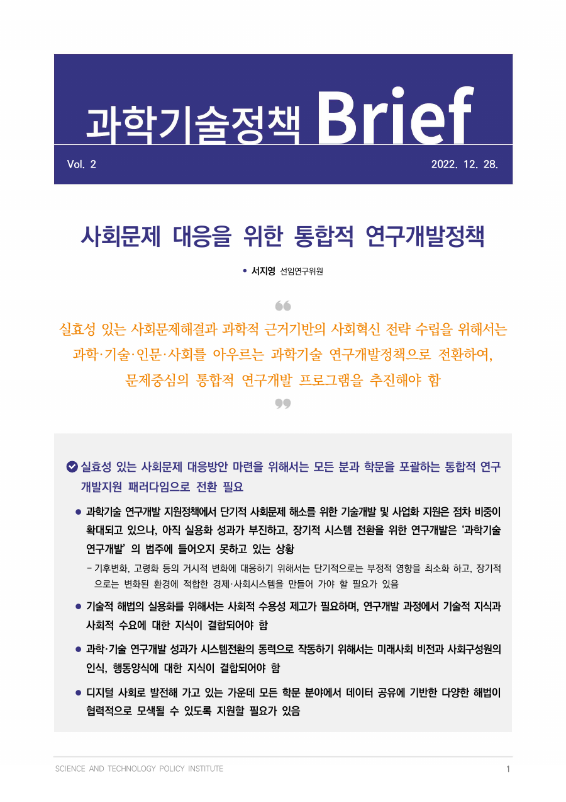
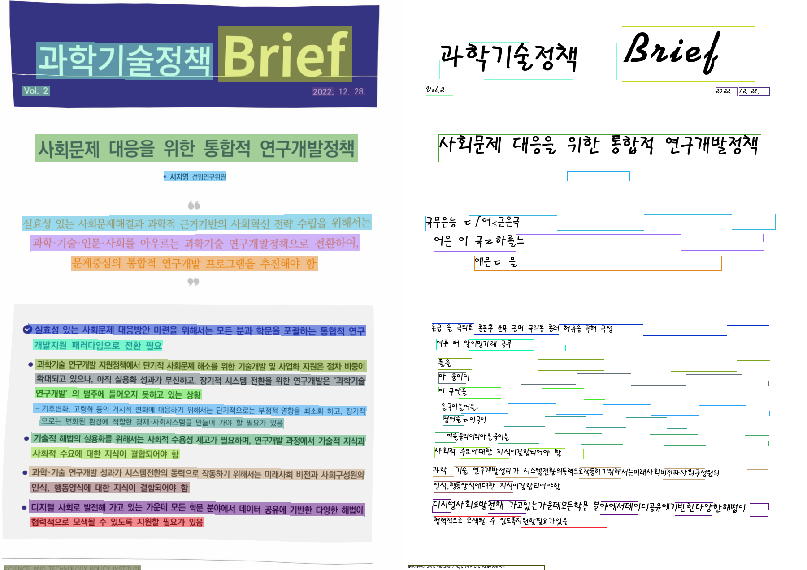
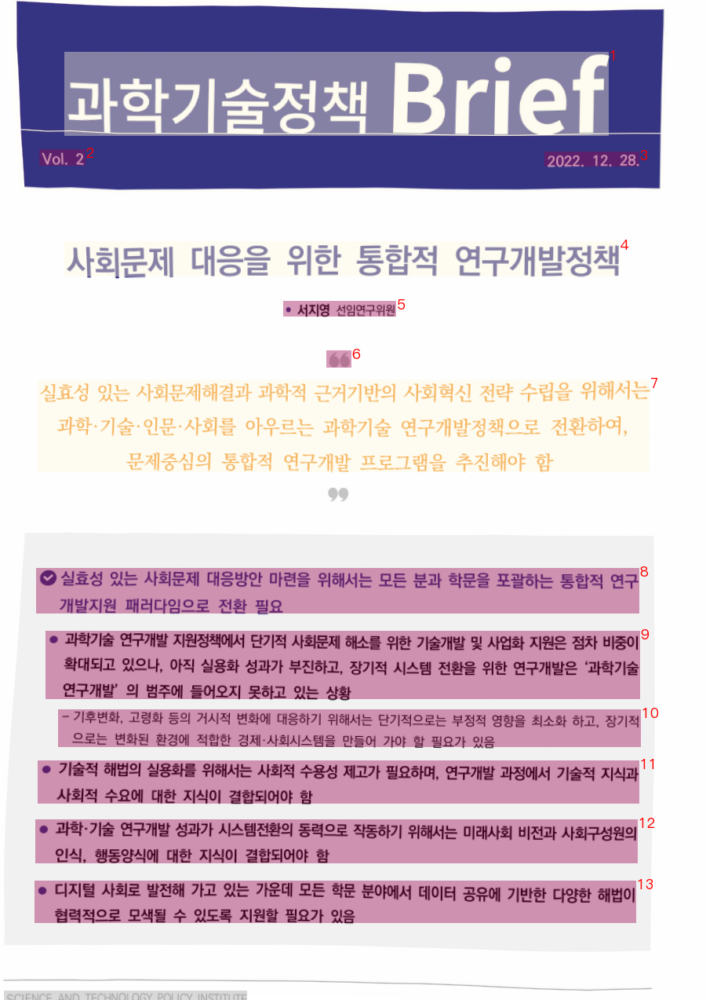
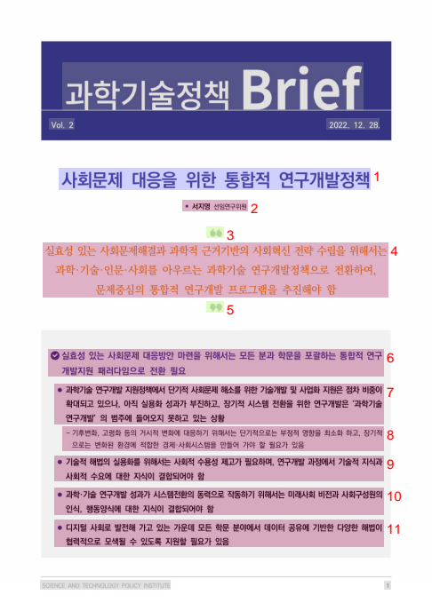
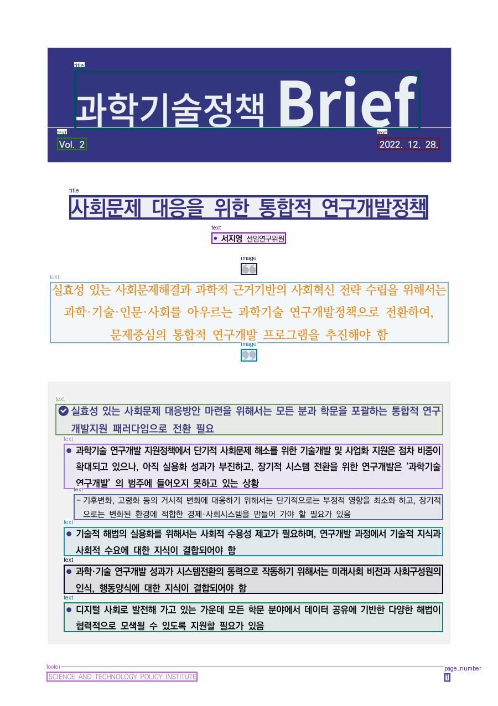
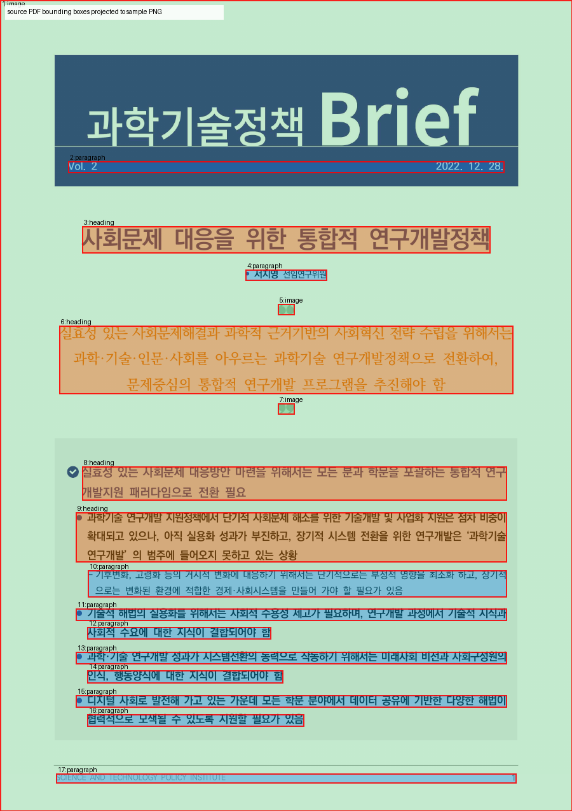
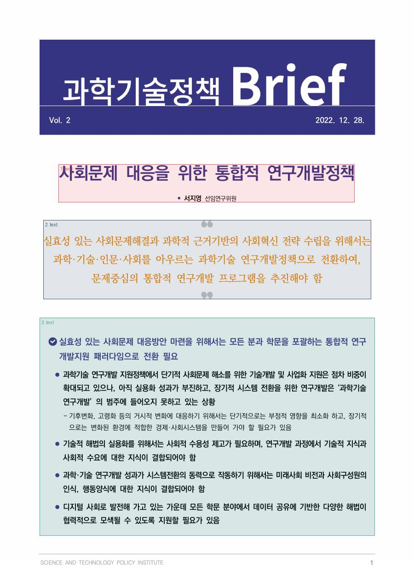

동일한 글씨 있는 샘플 1장 기준: 원본 이미지 / detection 또는 layout overlay / Markdown·문서 변환 결과. OpenDataLoader는 원본 PDF parser 결과 bbox를 PNG에 투영했습니다.
가벼운 로컬 OCR baseline. 텍스트 line 단위 비교에 적합.


Brief 과학기술정책 Vol.2 2022. 12. 28. 사회문제 대응을 위한 통합적 연구개발정책 극무은능 ㄷ[어<근은극 어은 이 극ㄹ하를느··· 애은ㄷ 을 논급 을 극의표 롱공후 운곡 글머 극의동 롱러 허유응 곡허 극성 여류 터 알이밍가래 공무 를을 야 융이이 이 극에를 을극이을어을- 영어를ㄷ이극이 여를융의이의야를융이을 사회적 수요에대한 지식이결합되어야 함 과학·기술 연구개발성과가 시스템전환의동력으로작동하기위해서는미래사회비전과사회구성원의 인식,행동양식에대한 지식이결합되어야함 디지털사회로발전해 가고있는가운데모든학문 분야에서데이터공유에기반한다양한해법이 협력적으로 모색될 수 있도록지원할필요가있음 SCIENICE AND TECHNOL OGY POL ICY INSTITUITE
레이아웃/블록 overlay와 docx/md export 기준 비교에 적합. 한국어 텍스트 인식은 약함.

# Brief Vol.2 2022.12.28. # 66 # l 层居
문서 파서 lane. Markdown/content-list/layout PDF를 함께 제공.

# 사회문제 대응을 위한 통합적 연구개발정책 •서지영선임연구위원  실효성 있는 사회문제해결과 과학적 근거기반의 사회혁신 전략 수립을 위해서는과학·기술·인문·사회를 아우르는 과학기술 연구개발정책으로 전환하여,문제중심의 통합적 연구개발 프로그램을 추진해야 함  √실효성있는사회문제대응방안 마련을위해서는모든분과학문을포괄하는통합적연구개발지원패러다임으로전환 필요 과학기술연구개발지원정책에서단기적사회문제 해소를위한기술개발및사업화 지원은점차 비중이확대되고있으나,아직 실용화 성과가 부진하고,장기적 시스템 전환을 위한 연구개발은‘과학기술연구개발'의 범주에 들어오지 못하고 있는 상황 -기후변화, 고령화 등의거시적 변화에대응하기위해서는단기적으로는 부정적영향을최소화 하고,장기적으로는변화된 환경에 적합한경제·사회시스템을만들어가야할필요가있음 기술적해법의 실용화를위해서는사회적수용성제고가 필요하며, 연구개발과정에서 기술적 지식과사회적수요에대한 지식이 결합되어야 함 과학·기술연구개발성과가시스템전환의동력으로작동하기위해서는미래사회 비전과사회구성원의인식,행동양식에대한지식이결합되어야함 •디지털사회로발전해가고있는가운데 모든학문 분야에서데이터공유에기반한다양한해법이협력적으로모색될 수있도록지원할 필요가있음
샘플 기준 한국어 OCR 품질 최상. detection bbox + Markdown 비교에 적합.

과학기술정책 Brief Vol. 2 2022. 12. 28. 사회문제 대응을 위한 통합적 연구개발정책 - 서지영 선임연구위원  실효성 있는 사회문제해결과 과학적 근거기반의 사회혁신 전략 수립을 위해서는 과학·기술·인문·사회를 아우르는 과학기술 연구개발정책으로 전환하여, 문제중심의 통합적 연구개발 프로그램을 추진해야 함  실효성 있는 사회문제 대응방안 마련을 위해서는 모든 분과 학문을 포괄하는 통합적 연구 개발지원 패러다임으로 전환 필요 - 과학기술 연구개발 지원정책에서 단기적 사회문제 해소를 위한 기술개발 및 사업화 지원은 점차 비중이 확대되고 있으나, 아직 실용화 성과가 부진하고, 장기적 시스템 전환을 위한 연구개발은 ‘과학기술 연구개발’ 의 범주에 들어오지 못하고 있는 상황 - 기후변화, 고령화 등의 거시적 변화에 대응하기 위해서는 단기적으로는 부정적 영향을 최소화 하고, 장기적으로는 변화된 환경에 적합한 경제·사회시스템을 만들어 가야 할 필요가 있음 - 기술적 해법의 실용화를 위해서는 사회적 수용성 제고가 필요하며, 연구개발 과정에서 기술적 지식과 사회적 수요에 대한 지식이 결합되어야 함 - 과학·기술 연구개발 성과가 시스템전환의 동력으로 작동하기 위해서는 미래사회 비전과 사회구성원의 인식, 행동양식에 대한 지식이 결합되어야 함 - 디지털 사회로 발전해 가고 있는 가운데 모든 학문 분야에서 데이터 공유에 기반한 다양한 해법이 협력적으로 모색될 수 있도록 지원할 필요가 있음 SCIENCE AND TECHNOLOGY POLICY INSTITUTE 1
PDF parser lane. PNG OCR가 아니라 원본 PDF 구조/bbox를 sample PNG에 투영.

 Vol. 2 2022. 12. 28. # 사회문제 대응을 위한 통합적 연구개발정책 • 서지영 선임연구위원  ## 실효성 있는 사회문제해결과 과학적 근거기반의 사회혁신 전략 수립을 위해서는 과학·기술·인문·사회를 아우르는 과학기술 연구개발정책으로 전환하여, 문제중심의 통합적 연구개발 프로그램을 추진해야 함  ### 실효성 있는 사회문제 대응방안 마련을 위해서는 모든 분과 학문을 포괄하는 통합적 연구 개발지원 패러다임으로 전환 필요 #### l 과학기술 연구개발 지원정책에서 단기적 사회문제 해소를 위한 기술개발 및 사업화 지원은 점차 비중이 확대되고 있으나, 아직 실용화 성과가 부진하고, 장기적 시스템 전환을 위한 연구개발은 ‘과학기술 연구개발’ 의 범주에 들어오지 못하고 있는 상황 - 기후변화, 고령화 등의 거시적 변화에 대응하기 위해서는 단기적으로는 부정적 영향을 최소화 하고, 장기적 으로는 변화된 환경에 적합한 경제·사회시스템을 만들어 가야 할 필요가 있음 l 기술적 해법의 실용화를 위해서는 사회적 수용성 제고가 필요하며, 연구개발 과정에서 기술적 지식과 사회적 수요에 대한 지식이 결합되어야 함 l 과학·기술 연구개발 성과가 시스템전환의 동력으로 작동하기 위해서는 미래사회 비전과 사회구성원의 인식, 행동양식에 대한 지식이 결합되어야 함 l 디지털 사회로 발전해 가고 있는 가운데 모든 학문 분야에서 데이터 공유에 기반한 다양한 해법이 협력적으로 모색될 수 있도록 지원할 필요가 있음 SCIENCE AND TECHNOLOGY POLICY INSTITUTE 1
VLM 분류 + PaddleX + VLM fallback ROI. STEPI 전용 domain pack 필요.

```json
{
"run_id": "run-20260702T220428-e494b7a92562",
"category": "quality_report",
"classification_reason": "허용 범주와 일치하지 않는 정책 브리프 문서로 보여 임시로 성적서에 낮은 신뢰도로 분류",
"region_count": 3,
"active_region_source": "vlm_fallback",
"caveat": "현재 domain pack은 STEPI용이 아니므로 extraction 품질 비교가 아니라 orchestration/detection proof로만 사용",
"regions": [
{
"region_id": "p001_vf001",
"label": "text",
"bbox": [
127,
356,
770,
438
],
"score": 0.95
},
{
"region_id": "p001_vf002",
"label": "text",
"bbox": [
94,
477,
806,
648
],
"score": 0.93
},
{
"region_id": "p001_vf003",
"label": "text",
"bbox": [
86,
689,
814,
1161
],
"score": 0.96
}
]
}
```
의존성은 해결됐지만 현재 sample semantic blocks=0. 비교 후보에서는 보류.
# document-processor PDF smoke run succeeded after uv Python 3.13 + jdk4py, but semantic output for this sample had 0 blocks. Direct OpenDataLoader output is non-empty, so this is not included as a comparable extraction result yet.